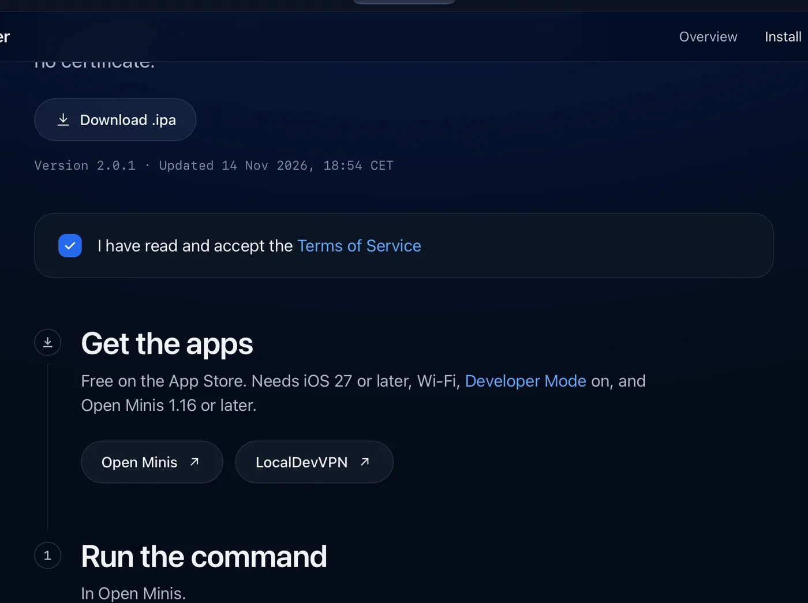
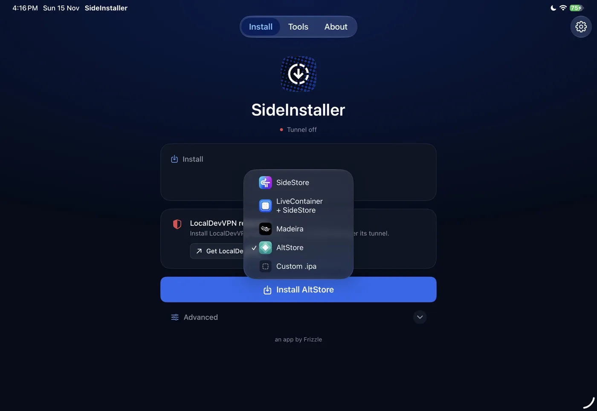
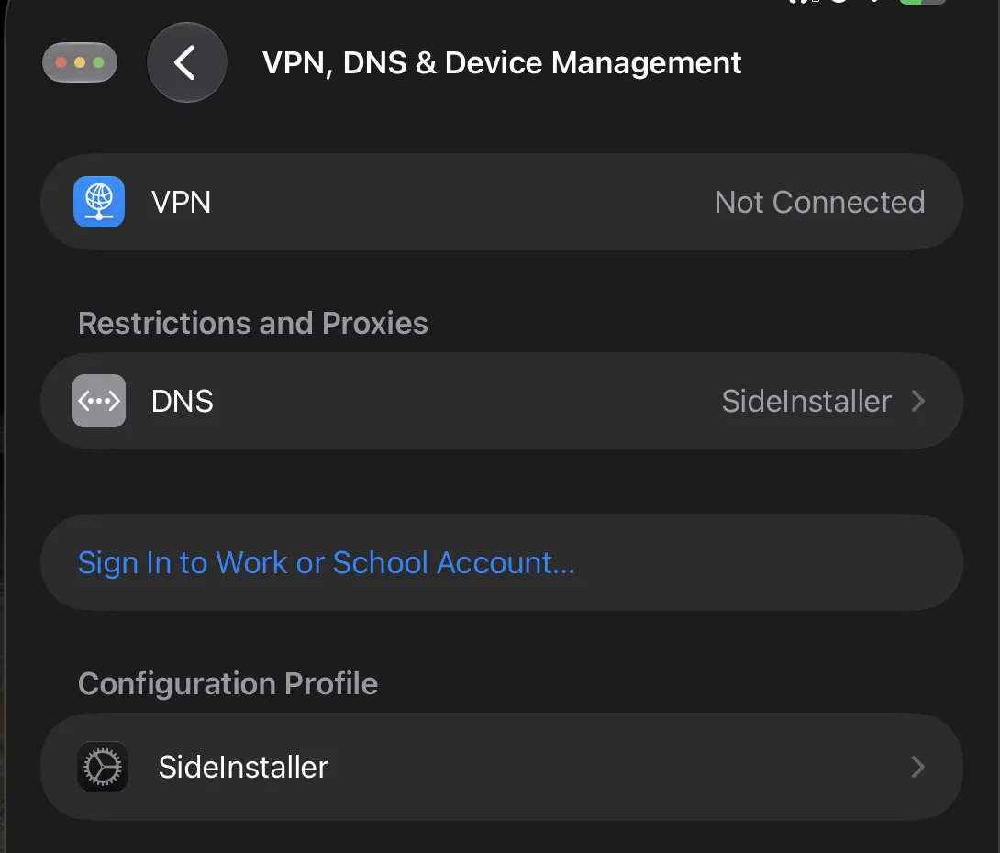
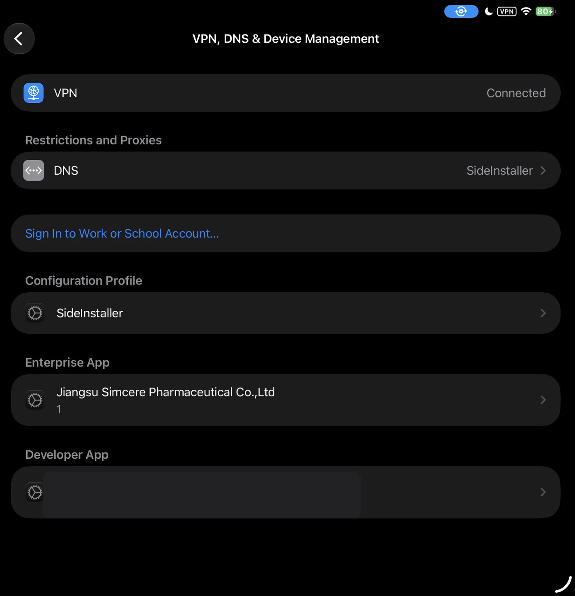

Quick answer
Yes, you can install the community GTA V Port on an iPhone or iPad without a Mac, as long as you're on iOS/iPadOS 27 or later. Install SideInstaller, pair the device with itself in Settings → Privacy & Security → Developer Mode, use it to install AltStore or SideStore, sideload the GTA5Port-iOS IPA, then drop your own game files into the app's folder. Refresh it every 7 days.
- SideInstaller installed and opened on the iPad, with no computer involved.
- On-device pairing in Developer Mode worked, and SideInstaller installed AltStore.
- AltStore picked up the existing GTA V Port install (expired, −1 days) and signed itself for 7 days.
- Refreshing the expired game and relaunching it. We'll add a real screenshot here once it's confirmed.
Is this an official GTA V app?
No. Rockstar has never released GTA V for iPhone or iPad. This is Five Star Port, an unofficial community project.
It runs the game natively on the device: no cloud streaming, and no computer connected while you play. It isn't on the App Store; it ships as an .ipa file you sideload yourself. Press coverage describes the engine being pre-translated to ARM64 code with a custom Metal renderer, and support for story mode with saves, free roam, touch controls and Bluetooth controllers.
Set your expectations: reviewers report the phone heats up fast, textures can look soft at higher resolutions, and on-screen buttons cover part of the view. It's an impressive tech feat, not a console-quality port.
Device and storage requirements
- iOS for the game
- iOS 16 or later
- iOS for no-Mac setup
- iOS / iPadOS 27 or later (older versions need a computer once)
- RAM
- 6 GB recommended; 4 GB devices may run out of memory
- Devices
- iPhone 12 Pro, 13 Pro, 14 and newer; recent iPads
- Free storage
- About 30 GB (game data is roughly 19–21 GB, plus room to unpack)
- Account
- A free Apple Account; no paid developer program
- Network
- Wi-Fi for setup and pairing
The three pieces you need
Most failed installs come from mixing these up. They're three separate things:
The IPA
The GTA V Port app, about 125 MB. Just the engine and launcher, with no game content.
Game files
About 20 GB of game data that you supply. Without it the app opens with nothing to play.
A sideloader
AltStore or SideStore signs the IPA with your Apple Account and refreshes it every 7 days.
1Get the GTA V Port IPA
2 minDownload the latest GTA5Port-iOS-vX.Y.Z.ipa from the project's own release channel and save it to the Files app. Stick to the official channel; re-uploads on random sites are a common way to slip malware into sideloaded apps. We don't host or mirror the IPA.
2Install SideInstaller
10 minSideInstaller is a free, open-source app that installs SideStore, LiveContainer or AltStore directly on the device, with no desktop tool. Its official site is sideinstaller.net. At the time of testing, its install page asked for:
- iOS / iPadOS 27 or later, Wi-Fi, and Developer Mode on
- Open Minis (1.16+) and LocalDevVPN, both free on the App Store
- Running SideInstaller's setup command in Open Minis while LocalDevVPN is connected

Mid-setup we landed on a page at a different address (app.sideinstaller.com) showing "Premium Upgrade Required" with a donation and activation-code box. SideInstaller is free and open source, and paying doesn't get you a valid Apple signing certificate. Go back to the official site, and never type your Apple Account password into a web page.

3Pair your device with itself
3 minThis is the step that replaces the Mac. Instead of a computer creating a pairing file over USB, iOS 27 can pair with an app on the same device:
- Allow notifications when SideInstaller asks; that's how the pairing code reaches you.
- Open Settings → Privacy & Security → Developer Mode.
- Tap Pair with SideInstaller.
- Enter your passcode if asked.
- Type the code shown at the top of the screen into the Settings prompt. If none appears, switch back to SideInstaller to read it.

4Install AltStore or SideStore
5 minWith the tunnel connected, open SideInstaller's Install tab and pick a target: SideStore, LiveContainer + SideStore, Madeira, AltStore or a custom IPA. The port's developers recommend SideStore or AltStore. We chose AltStore because the game had originally been installed with it.

When asked, sign in with your Apple Account inside the app. AltStore and SideStore sign apps with a free 7-day certificate tied to your account.
5Sideload the GTA V Port IPA
5 minOpen AltStore or SideStore, go to My Apps, tap + and choose the GTA5Port-iOS IPA from Files. When it finishes, GTA V Port shows up under Installed with an expiry countdown.


6Add your game files
15–30 min- Open GTA V Port once so it creates its folder.
- In Files, move your game folder or archive to On My iPhone / iPad → GTA V Port.
- Keep the data local, not in iCloud Drive.
- Relaunch. The app checks the files and can unpack an archive for you.
- Choose Story Mode or Sandbox and press Play.
The port expects a specific format of the game data; reporting says a normal Steam or installed PC folder won't work. We don't link to, host or explain where to find game data. Only use files you're legally entitled to use.
7Keep the app signed
With a free Apple Account, every sideloaded app is signed for 7 days. When that runs out, iOS won't open it. Your data stays put; the app just won't launch.
- Open AltStore or SideStore every few days and tap Refresh All before the counter hits zero.
- Refreshing re-signs the app in place. Deleting it removes its folder, including ~20 GB of data and your saves.
- Don't uninstall AltStore or SideStore "because the game's already installed". That's exactly how our expired-app problem started: with no sideloader, nothing can renew the signature.
The enterprise certificate route (not recommended)
LocalDevVPN wasn't available in our App Store region, so we tried SideInstaller's fallback: a DNS configuration profile plus a list of legacy enterprise certificates. It got SideInstaller onto the iPad, but here's what you're agreeing to.




- Trusting an enterprise developer lets any app signed with that certificate run on your device.
- Apple can revoke these certificates at any moment, often without warning.
- Expiry dates on a list prove nothing about whether a certificate still works.
- If you use it anyway, use it only to bootstrap SideInstaller, then clean up (below).
Clean up afterwards
Once AltStore or SideStore is installed and signed with your own Apple Account, go to Settings → General → VPN, DNS & Device Management:
- Remove the SideInstaller DNS profile. SideInstaller's own instructions say to remove it once SideStore is installed.
- If you trusted an enterprise app, delete the apps signed with it and the entry disappears.
- Keep the Developer App entry for your own Apple Account. That's what keeps AltStore/SideStore and the game signed.

Troubleshooting
Error"App is no longer available"
Cause: the 7-day signature expired. Fix: open AltStore or SideStore and refresh. If the sideloader itself is gone, reinstall it with SideInstaller first.
Error"Untrusted Developer"
Cause: the certificate isn't trusted yet. Fix: Settings → General → VPN & Device Management → trust the entry for your own Apple Account.
PairingThe pairing code never appears
Cause: notifications are blocked. Fix: allow notifications for SideInstaller or AltStore, or switch back to the app to read the code.
SetupLocalDevVPN isn't in my App Store
Cause: regional availability. Fix: check SideInstaller's help page for supported alternatives. Treat the enterprise route as a last resort.
SetupThe enterprise-signed app won't open
Cause: the certificate was revoked. Fix: don't keep cycling through certificates; switch to the pairing route.
Game"Game files missing"
Cause: wrong folder, an iCloud copy, or the wrong data format. Fix: move the data to On My iPhone/iPad → GTA V Port, keep it local, relaunch.
GameCrashes while loading
Cause: not enough RAM or storage. Fix: close other apps, free 30 GB+, lower the graphics preset and resolution.
Account"Maximum App IDs reached"
Cause: the free account's App ID limit. Fix: remove sideloaded apps you don't use, or wait for IDs to free up.
Legal and safety notes
- GTA V Port is unofficial and not affiliated with or endorsed by Rockstar Games or Take-Two Interactive. Grand Theft Auto and GTA are their trademarks.
- This guide doesn't host, link to or distribute game data. Respect the game's copyright and only use content you're entitled to.
- Enter your Apple Account only inside AltStore or SideStore, never on a website. A separate Apple Account just for sideloading is a sensible extra step.
- Sideloaded apps aren't reviewed by Apple. Download only from official project channels.
- Steps change with every iOS and installer update. If something here doesn't match your screen, trust the official SideInstaller, AltStore and SideStore docs.
Frequently asked questions
Can I install GTA V on iPhone without a PC or Mac?
On iOS/iPadOS 27 or later, yes. SideInstaller uses on-device pairing in Developer Mode to install AltStore or SideStore, which then sideload the GTA V Port IPA. On older iOS versions the usual route still needs a computer once.
Is the GTA V iOS port official?
No. It's a community project (Five Star Port). Rockstar hasn't released GTA V for iPhone or iPad and doesn't endorse the port.
How much storage does it need?
Plan for about 30 GB free. The game data alone is roughly 19–21 GB, plus room for unpacking.
Which iPhones can run it?
iOS 16 or later, ideally with 6 GB of RAM or more: iPhone 12 Pro, 13 Pro, 14 and newer, or a recent iPad. 4 GB devices may run out of memory.
Why does GTA V stop opening after seven days?
Apps sideloaded with a free Apple Account are signed for seven days. Open AltStore or SideStore and refresh before the counter runs out.
Do I need a paid Apple Developer account?
No. A free Apple Account works, with the 7-day limit and a small number of App IDs.
Can I refresh without losing the game?
Yes. Refreshing re-signs the app in place. Deleting the app deletes its folder, including game data and saves.
SideStore or AltStore?
Both are recommended by the port's developers. SideStore is built to refresh apps without a computer; AltStore is a good pick if your game was originally installed with it, since it recognises its own installs.
Are enterprise certificates safe?
They're risky. They belong to unrelated companies, Apple can revoke them at any time, and trusting one lets unknown apps run on your device. Use the pairing route if you can and remove the trust afterwards.
Sources and credits
Reporting and documentation
- BGR: "Your iPhone Can Now Play GTA V Natively", Aaron Greenbaum, 28 Oct 2026
- iPhones.ru: GTA V on iPhone, the first native port, Artyom Bausov, 29 Oct 2026 (Russian)
- SideInstaller (by Frizzle) · AltStore (by Riley Testut) · SideStore
Images
- Screenshots: captured by the author on his own iPad, 15 Nov 2026. Personal details redacted. App interfaces shown belong to their respective developers.
- Illustrations and diagrams: original artwork by Beyond Branding. No game assets or third-party artwork are used.